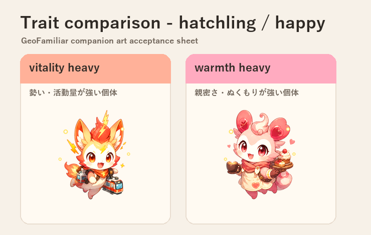
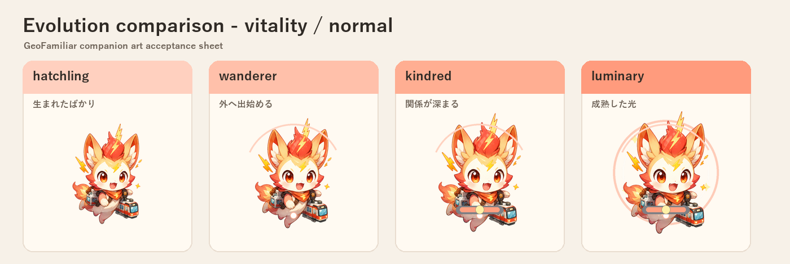
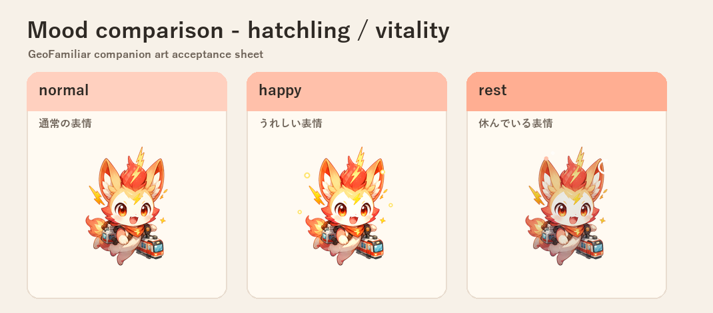

<!doctype html>
<html lang="ja">
<meta charset="utf-8">
<meta name="viewport" content="width=device-width, initial-scale=1">
<title>GeoFamiliar Art Acceptance</title>
<style>
body{margin:0;font-family:system-ui,-apple-system,BlinkMacSystemFont,"Yu Gothic",sans-serif;background:#f7f1e8;color:#2f2a25}
main{max-width:980px;margin:0 auto;padding:28px 18px 40px}
h1{font-size:28px;margin:0 0 8px}
p{color:#6d6257;line-height:1.6}
section{margin-top:24px}
img{width:100%;height:auto;border:1px solid #e9ddd0;border-radius:12px;background:white}
</style>
<main>
<h1>GeoFamiliar アート検収シート</h1>
<p>クロエ指摘の受入条件に合わせて、特性差・進化段階差・表情差を同一条件で比較するための静的証跡です。</p>
<section><h2>特性差: hatchling / happy</h2></section>
<section><h2>進化差: vitality / normal</h2></section>
<section><h2>表情差: hatchling / vitality</h2></section>
</main>
</html>
